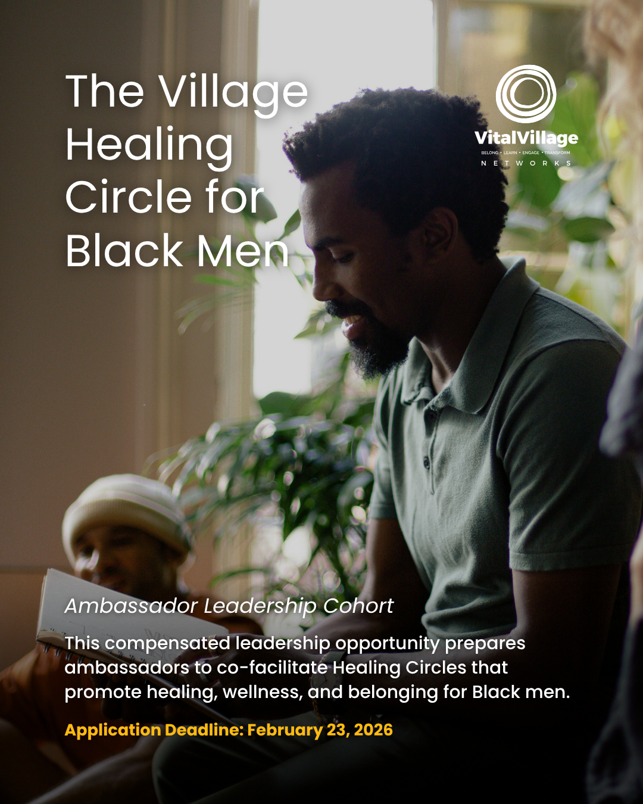
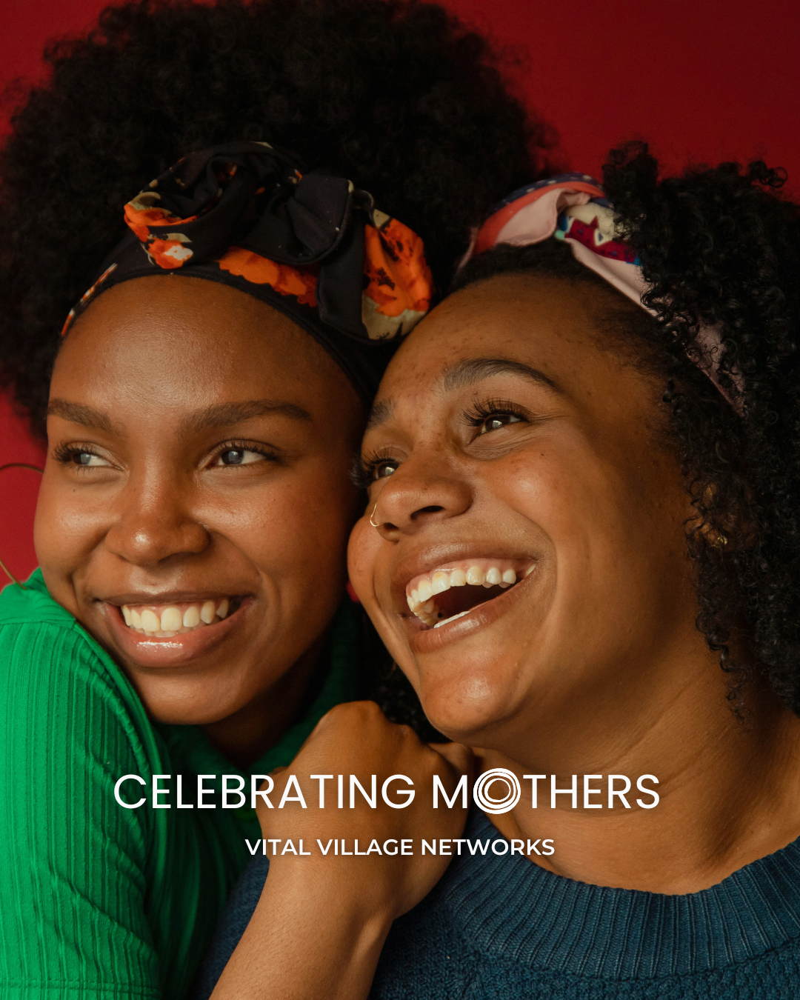
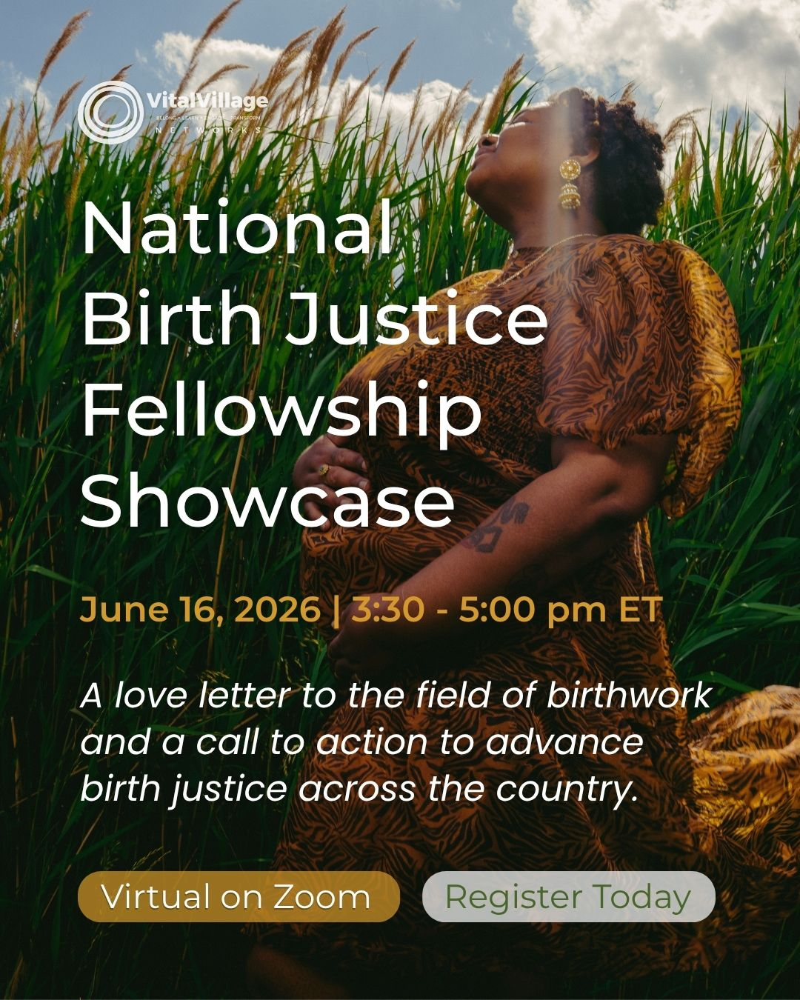
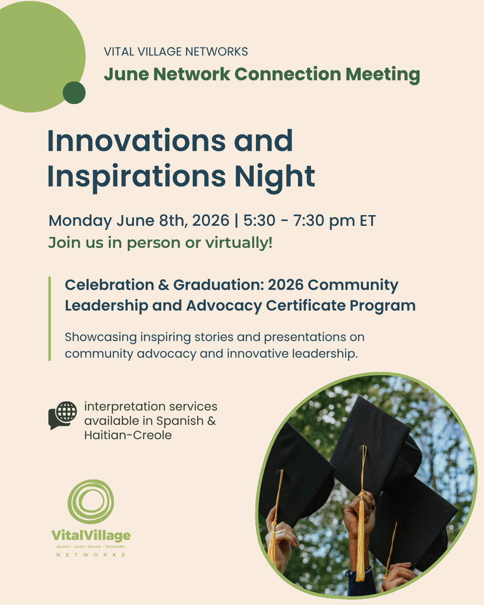
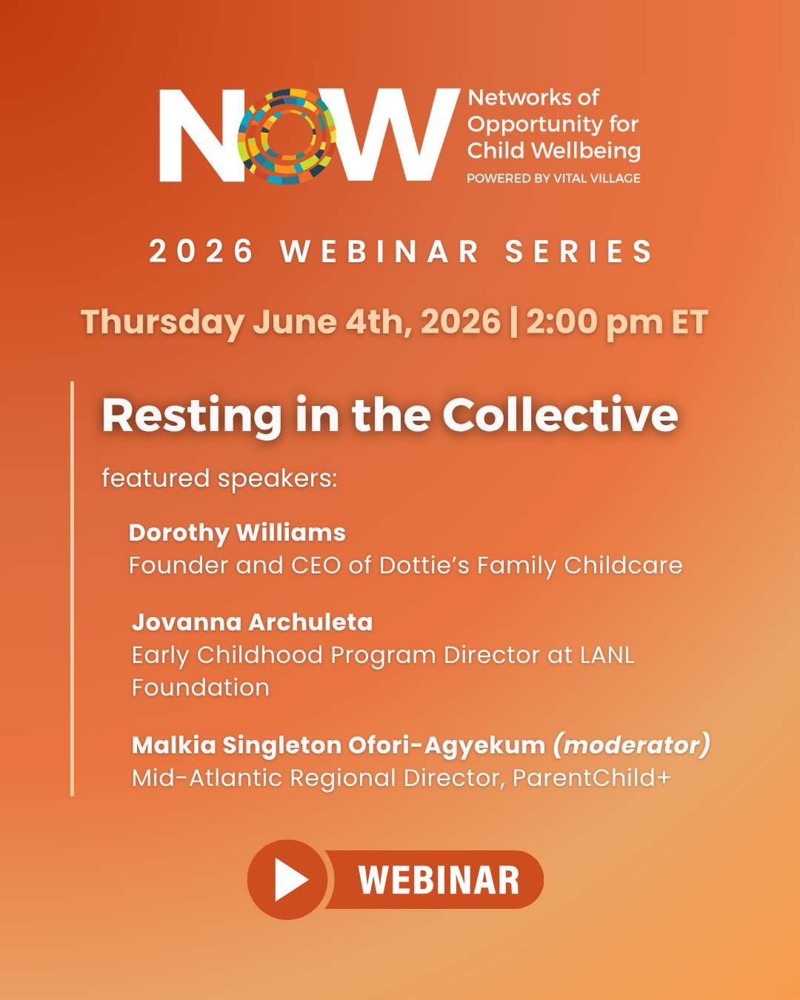
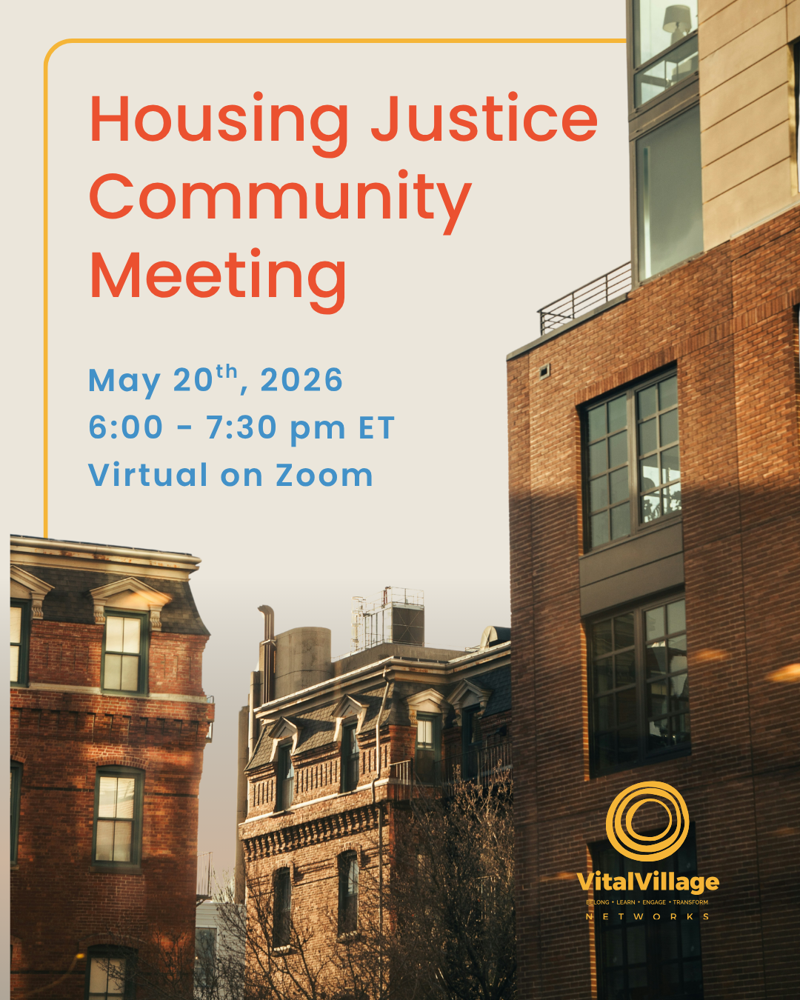

Vital Village Networks
Digital Communications Strategist at Vital Village Networks, a nonprofit focused on social justice and community-sourced solutions, spanning Birth Justice, Food Sovereignty, Community Data Sourcing, and beyond.
Communications work doesn't start and end with graphic design or a campaign launch. Working across more than 10 teams, I am one of few people with a cross-organizational view of the work.
I study, synthesize, and connect across a broad range of projects while maintaining a consistent brand voice and narrative.
Approach
Rather than chasing new audiences, I work from the inside out — strengthening our network through partnership and clear, intentional storytelling.





